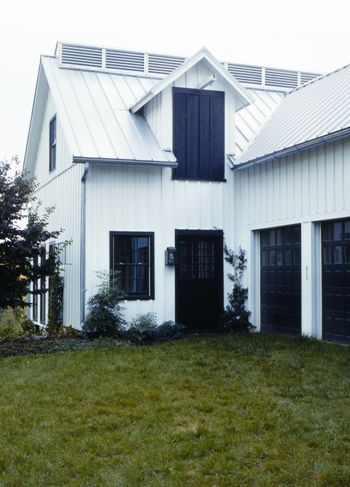
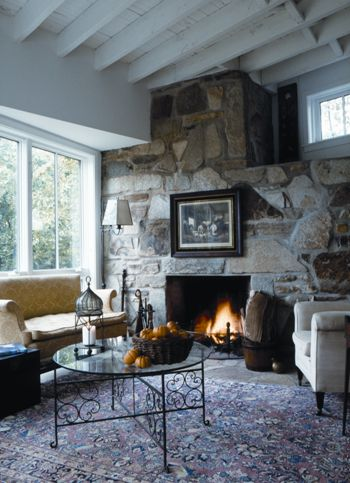
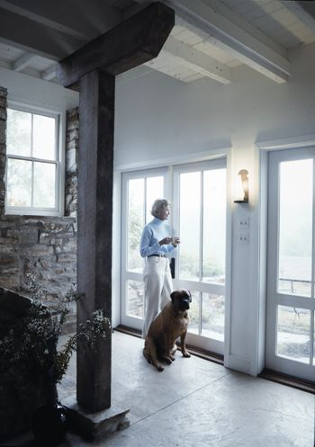
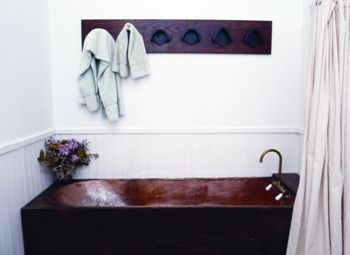
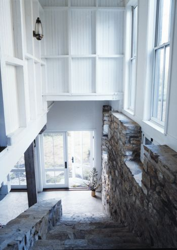
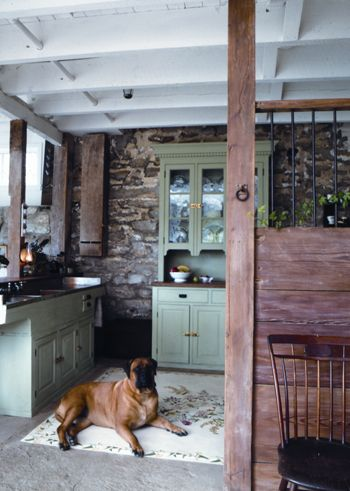
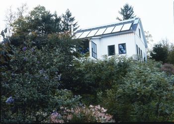

Changing your life requires courage and imagination, and Cassandra Naylor has plenty of both. Growing up at Cliffeholme, the Maryland farm her great-grandfather bought just after the Civil War, instilled in Naylor a love and respect for nature, and she became a dedicated environmentalist long before the term was invented. When her husband passed away, Naylor decided the time had come to simplify her life and put her beliefs about ecology and conservation into practice.
First on Naylor’s agenda was to give the large stone home she’d lived in all her life to her son and his family, and move into a smaller, more practical dwelling. An old barn on her property perfectly suited her simpler tastes and love of nature. Built by her grandmother in 1902, the structure was still sound, though the old horse stalls were now inhabited by birds and a variety of other wild animals.
Encouraged by her children, she decided to turn the barn into her new home. Her plan was nearly thwarted, however, when a housing development sprang up next door, its access road just 6 feet from her property line. Though tempted to abandon the project, Naylor resolved to create an energy-efficient home that would be the antithesis of mass-produced housing. She planted a screen of evergreens to hide the access road and carried on with her plans.
Naylor admires the work of pioneering green architect William McDonough, the only individual to receive the Presidential Award for Sustainable Development. “I am especially taken by his idea that rather than trying to figure out how to lessen our effect on the Earth, we should instead do more to make the Earth better,” Naylor says.
“As it turned out, my son knew McDonough, who allowed me to call upon his firm for advice, providing I did all the work,” she recalls. In this case, “the work” meant extensive research to find the best materials and most efficient appliances. In addition, Naylor traced each component all the way back to its source to measure the fuel and air pollution involved in bringing it to her site. Whenever possible, she used local materials.
Once she knew exactly what she wanted, Naylor hired Baltimore architect George Holback to draw up the plans. Holback seldom does residential work, but he is interested in sustainable building and admired his client’s commitment to creating a house with minimal barriers between herself and the natural world.
The barn, which is built into the side of a hill, was left almost entirely in its original state, although some parts were reconfigured. The top floor was transformed into a large, high-ceilinged living room. Floors made of old wooden planks were sanded to remove the chemical sealers and left unfinished. Naylor converted the adjoining tack room into her bedroom, and two box stalls with their original doors still in place into bedrooms for visiting grandchildren. The remaining upper horse stalls were divided from the living space by sliding barn doors and left as a home for the chickens that provide eggs for Naylor’s family and her grandson’s egg delivery business.
Downstairs, Naylor turned the old milk room into a cozy sitting room and reconfigured two standing stalls to make the kitchen. One of two box stalls now serves as the utility room while the other has become a dining room that seats up to eight people.
Because Naylor shared McDonough’s vision that buildings should rely on sunlight for heat and illumination, she decided to live entirely off the grid. Water for the kitchen and the bathroom is heated by solar power. Downstairs, hot water piped through tubes beneath the concrete floor provides radiant heat.
The upstairs is heated by south-facing windows during the day and a wood-burning stove at night. Even during the hot, muggy Maryland summers, the barn’s doors and windows allow excellent cross ventilation that keeps the house comfortable. For extra air circulation, there’s a ceiling fan in the great room, though it’s seldom used. The concrete floors downstairs, treated to look like stone but left unsealed, help keep the area cool.
The building runs on 24-volt direct current generated by photovoltaic panels. Because the expansive windows provide enough light to read and work by even on cloudy days, Naylor uses so little electricity that she usually has a surplus, which she stores in battery packs for nighttime use.
Conserving water was important to Naylor long before Baltimore began to suffer from one of the longest droughts in Maryland history. She has installed water-saving appliances and showerheads, and the composting toilet requires no water at all. On an average day, Naylor uses about 24 gallons of water - considerably less than the 60 to 70 gallons per capita usage estimated by the American Water Works Association. All used water is gravity fed into two stone troughs. From there it leaches slowly into the garden, and because she uses Oasis, a potassium-based laundry soap, the graywater also fertilizes the plants.
Throughout her property Naylor is replacing all non-native plants with indigenous species - particularly those that can survive with little water. She is gradually planting trees around three sides of a meadow that she seeded with native grasses and wildflowers, and after giving it one more year to become established, she plans to raise a flock of sheep.
Living in harmony with the natural world, Naylor says, has resulted in some happy and unexpected relationships. “A wonderful brown bat spends his days hanging upside down in the old part of the barn and his nights hunting insects, which helps keep my home bug-free, even without screens.”
Many of the barn’s original inhabitants have returned, and wilder and shyer creatures have come back as well. A fox is back in his old lair and can be seen almost every day patrolling the borders of the property.
And the development next door, now more than 100 houses and still growing, is so well hidden by the evergreen hedge that you’d never know it was there.
Carola Kittredge has contributed to Architectural Digest and House Beautiful magazines. She hopes that Cassandra Naylor’s wonderful house will inspire others to live more sustainably.
This article originally appeared in our sister magazine, Natural Home, which provides ideas, inspiring examples and expert opinions about healthy, eco-friendly and beautiful homes. Mother Earth News readers can now subscribe to it at a discounted rate, six issues for $15. To order, visit
|
 LAURIE E. DICKSON PHOTOGRAPHY Siding made of sustainable materials covers the barn’s exterior. |
 LAURIE E. DICKSON PHOTOGRAPHY The fireplace in this cozy living room provides extra heat in the winter. |
 LAURIE E. DICKSON PHOTOGRAPHY Naylor carefully researched ways to create a home that exists in harmony with the world around it. |
|
 LAURIE E. DICKSON PHOTOGRAPHY An extra- narrow copper bathtub conserves water. |
 LAURIE E. DICKSON PHOTOGRAPHY This stone staircase replaces a ramp to the barn’s upper level. |
 LAURIE E. DICKSON PHOTOGRAPHY Two of the barn’s standing stalls became a kitchen. |
|
 LAURIE E. DICKSON PHOTOGRAPHY This berm of native vegetation conceals the nearby housing project. |
|
|